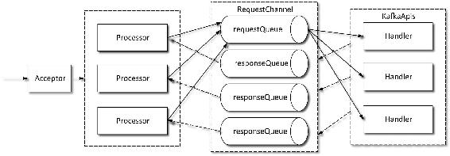
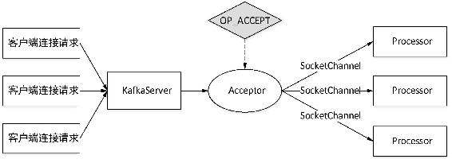
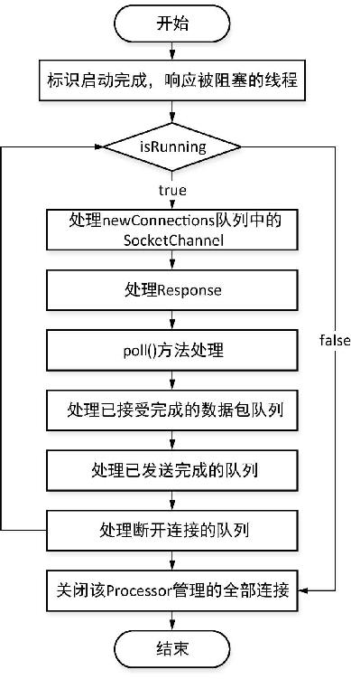
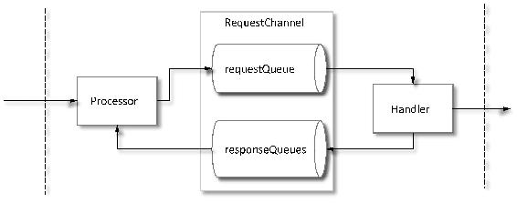

在KafkaServer启动时，初始化并启动了一个SocketServer服务，用于接受客户端的连接、处理客户端请求、发送响应等，同时创建一个KafkaRequestHandlerPool用于管理KafkaRequestHandler。SocketServer是基于Java NIO实现的网络通信组件，其线程模型为：一个Acceptor线程负责接受客户端所有的连接；N（${num.network.threads}）个Processor线程，每个Processor有多个Selector，负责从每个连接中读取请求；M（${num.io.threads}）个Handler（KafkaRequestHandler）线程处理请求，并将产生的请求返回给Processor线程。而Handler是由KafkaRequestHandlerPool管理，在Processor和Handler之间通过RequestChannel来缓冲请求，每个Handler从RequestChannel.requestQueue接受RequestChannel.Request，并把Request交由KafkaApis的handle()方法处理，经处理后把对应的Response存进RequestChannel.responseQueues队列。Kafka网络层线程模型如图3-15所示。

图3-15 Kafka网络层线程模型
了解Kafka网络通信层基本模型之后，现在我们对Kafka网络通信各组件的具体职责进行简要介绍。
Acceptor的主要职责是监听并接受客户端（统指请求发起方）的请求，建立和客户端的数据传输通道ServerSocketChannel，然后为客户端指定一个Processor。
Acceptor是一个继承AbstractServerThread类的线程类，AbstractServerThread是一个抽象线程类，实现了Runnable接口，提供和定义了对Kafka通信层各组件操作的辅助方法。Acceptor对Java NIO Selector相关操作进行了封装，在Acceptor实例化时会通过NSelector.open()创建一个Selector，创建和打开一个ServerSocketChannel，同时启动与之对应的所有Processor线程（Acceptor构造方法入参接收的Processor对象数组）。在Acceptor线程的run()方法中，首先为ServerSocketChannel在Selector上注册SelectionKey.OP_ACCEPT事件，然后以轮询方式查询并等待所关注的事件发生。若所关注的事件发生，则调用Acceptor.accept()方法对OP_ACCEPT事件进行处理。Acceptor.accept()方法第二参数为Processor对象，Kafka采用轮询（round-robin）的方式从Acceptor对应的Processor对象数组中取出一个Processor。
Acceptor.accept()方法的作用是对OP_ACCEPT事件进行处理，其实现逻辑如下。
（1）通过SelectionKey获取与之对应的ServerSocketChannel，并调用ServerSocketChannel. accept()方法建立与客户端的连接SocketChannel。
（2）由于建立了新的连接，因此调用ConnectionQuotas.inc()方法增加统计的连接数。
（3）将步骤1创建的SocketChannel交由Processor.accept()方法处理。将SocketChannel加入Processor的newConnections队列中，然后唤醒Processor线程开始处理newConnections队列。可见newConnections队列会被Acceptor线程和Processor线程并发操作，因此newConnections是一个ConcurrentLinkedQueue对象，用于保存新连接的SocketChannel。
当Accepor.accept()处理完后，以轮询方式计算下一个连接所对应的Processor对象，在Acceptor线程处理运行状态时继续等待新的OP_ACCEPT事件，按以上步骤进行处理。
由以上分析可知，Acceptor的作用就是接受客户端新的连接，创建SocketChannel，以轮询的方式交由Processor处理，添加到Processor的newConnections队列并唤醒Processor线程。这样就建立起了客户端与KafkaServer之间通信的通道。Acceptor在Kafka网络层连接中的地位如图3-16所示。

图3-16 Acceptor在Kafka网络层连接中的地位
Processor也是一个线程类，继承AbstractServerThread类，主要用于从客户端读取请求数据和将相应的响应结果返回给客户端。Processor定义了一个ConcurrentLinkedQueue[SocketChannel]类型的newConnections队列，该队列用来保存新连接的交由本Processor处理的SocketChannel；定义了一个Map[String, RequestChannel.Response]类型的inflightResponses集合，用来记录还未发送的响应；定义了一个管理网络连接的KSelector类型的selector字段。同时，Processor构造方法还接受一个由调用者传入的RequestChannel对象，RequestChannel是Processor与Handler线程之间交换数据的队列，用于暂存通信的Request和Response。RequestChannel将在下一小节进行详细介绍。
由于Processor是一个线程类，因此我们首先来分析其run()方法执行逻辑。该线程run()方法执行逻辑如下。
首先调用父类提供的startupComplete()方法。该方法通过CountDownLatch来实现Processor启动完成的信号标识，以此来唤醒由于等待Processor启动完成而被阻塞的线程。
然后检测Processor线程是否处于正常运行状态，即运行标志位isRunning是否为true。若Processor线程处于正常运行状态时执行以下逻辑。
（1）处理newConnections队列中的SocketChannel。迭代取出队列中的每个SocketChannel，调用KSelector.register()方法为每个SocketChannel在nioSelector上注册OP_READ事件，该方法的第一个参数是由SocketChannel基本属性构造的一个与之对应的唯一connectionId字符串。KSelector是Kafka实现的对Java NIO Selector的封装类。KSelector是为了与Java.nio.channels.Selector区分开，简称为KSelector，其实对应的是org.apache.kafka.common.network.Selector，而nioSelector是指Java.nio.channels.Selector。
（2）处理Response。从RequestChannel的responseQueues数组中取出与当前Processor对应的用于保存Response的队列，并通过Queue.poll()方法从Response队列的头部取一个Response（实质是remove操作，若队列头部元素为空则返回空），若Response不为空，则更新Requst.Response从Response队列出队列的时间，然后根据ResponseAction做相应处理。
（3）调用KSelector.poll()方法进行处理。该方法的职责与Java nioSelector.select()方法相对应，其实KSelector.poll()方法底层就是调用nioSelector.select()方法进行处理。poll()方法会将已接受完成的数据包、发送成功的请求、断开的连接添加至KSelector维护的相应队列当中。经由poll()方法处理之后，接下来就是要对IO完成的进度进行检查并做相应处理。
（4）处理已接受完成的数据包队列completedReceives。遍历该队列的每个NetworkReceive对象，与当前的Processor信息构造一个RequestChannel.Request对象，调用requestChannel.sendRequest()方法将RequestChannel.Request对象添加至requestChannel的requestQueue队列中，等待Handler进行处理。然后调用KSelector.mute()方法取消与该请求对应的KafkaChannel注册的OP_READ事件，即在发送响应给客户端之前该连接不能再读取任何请求数据。
（5）处理已发送完成的队列completedSends。当已完成将Repsonse发送给客户端，则将该Response从inflightResponses集合中移除，同时调用KSelector.unmute()为对应的连接通道KafkaChannel重新注册OP_READ事件，以恢复该通道能够重新读取请求数据。
（6）处理断开连接的队列disconnected。当一个连接已断开时，无法向该连接返回相应的Response，则将该Response从inflightResponses集合中移除，然后将SocketServer维护的连接数减1。
若isRunning为false，则关闭该Processor管理的全部连接。通过CountDownLatch.Countdown()操作标识关闭操作已完成，唤醒由于等待该Processor结束而被阻塞的线程。
至此，Processor线程的run()方法执行逻辑已介绍完毕，该方法执行流程如图3-17所示。
通过对Processor.run()方法实现逻辑分析可知：Processor主要职责是负责从客户端读取数据并将处理后的Response返回给客户端。Processor通过调用KSelector的mute()方法和unmute()方法分别对与之对应的连接通道KafkaChannel注册相应的事件，以保证请求与响应顺序一致。

图3-17 Processor线程run()方法执行逻辑流程
在3.4.2节我们提到了RequestChannel，RequestChannel是为了给Processor线程与Handler线程之间通信提供数据缓冲，是通信过程中Request与Response缓存的通道，是Processor线程与Handler线程交换数据的地方。
首先简单了解RequestChannel底层基本数据结构。RequestChannel维护了一个ArrayBlockingQueue类型的队列用于缓存Processor添加的Request队列requestQueue，一个用于保存Repsonse的Array[BlockingQueue[RequestChannel.Response]]类型的队列responseQueues，每个Processor对应一个BlockingQueue类型的Response队列。同时，RequestChannel还定义了一个List[(Int) => Unit]类型的responseListeners列表，用于记录当Handler线程向responseQueues添加Response时指定所要唤醒的Processor线程编号。在SocketServer初始化时，会调用RequestChannel.addResponseListener()方法为每个Processor线程映射一个唤醒该Processor线程的id。
RequestChannel提供了对这些集合添加和删除元素的方法，如sendRequest()方法用于将Request添加至requestQueue队列中，addResponseListener()方法用于为每个Processor线程添加一个唤醒该线程的id，sendResponse()方法用于将Response添加到responseQueues队列中。在将Response添加至responseQueues队列的时候会触发responseListeners唤醒对应的Processor线程。
通过RequestChannel的底层数据结构及相应方法可以看出，RequestChannel的作用就是在通信中起到缓冲队列的作用。Processor线程将读取到请求添加到RequestChannel.requestQueue队列中；Handler线程从reqeustQueue中取出请求进行处理，待处理完成后，Handler线程将处理结果Reponse添加至RequestChannel.responseQueues队列中，在添加Response至responseQueues队列时会通过responseListeners唤醒对应的Processor线程，Processor线程从responseQueues队列中取出与自己对应的responseQueue进行处理，最终将结果返回给客户端。该处理过程基本逻辑示意图如图3-18所示。

图3-18 RequestChannel缓冲处理逻辑
在对Kafka网络服务相关组件进行了简要讲解之后，现在我们再分析SocketServer启动过程。在启动一个Kafka代理时会实例化并启动一个SocketServer服务，首先分析SocketServer实例化过程。
首先，将${listeners}配置的每组协议分别映射成Kafka封装的一个用于保存协议信息的类EndPoint，构造一个EndPoint对象的集合endpoints。listeners配置格式为protocol://host:port或者protocol://[ipv6 host]:port，其中protocol为代理之间通信的安全协议类型。当前版本的Kafka支持的协议类型有PLAINTEXT、SSL、SASL_PLAINTEXT、SASL_SSL、TRACE。host可以为代理主机的IP、hostname值或者对应的域名，也可以不指定；port为指定的可用端口。listeners可以配置多组协议类型，每组之间以逗号隔开，如listeners=PLAINTEXT://myhost:9092,TRACE://:9091, PLAINTEXTSASL://0.0.0.0:9093，默认listeners为listeners=PLAINTEXT://:9092，listeners配置项是SocketServe所监听的地址。
然后，根据listeners.size* ${num.network.threads }之积计算需要创建的Processor总线程数，读者可以根据自己业务需要调整该参数。
最后，创建一个RequestChannel对象requestChannel，一个保存Processor的数组对象processors，用于保存EndPoint与Acceptor对应关系的Map类型acceptors，并声明记录连接数的connectionQuotas对象。同时根据processors数组大小，为数组中的每个位置添加一个用于唤醒该位置对应的Processor线程的ResponseListener。
在SocketServer实例化完成后，调用SocketServer.startup()方法启动SocketServer，startup()方法执行逻辑如下：首先根据配置的连接数限制实例化ConnectionQuotas对象，然后遍历端点集合，为每个EndPoint创建一组Processor线程和一个Acceptor线程。在实例化Acceptor时会启动相应的Processor线程，在启动Acceptor线程时会阻塞主线程直到Acceptor线程启动完成。
SocketServer启动后就可以通过Acceptor接受客户端的请求，交由Acceptor对应的Processor处理，Processor线程将请求添加到RequestChannel.requestQueue队列中，Handler从RequestChannel.requestQueue队列中取出请求分发处理，然后将处理结果Response存入RequestChannel.responseQueues队列中，添加Respoonse时会唤醒与之对应的Processor，Processor从RequestChannel.responseQueues队列中取出与自己对应的responseQueue队列根据ResponseAction进行相应处理。